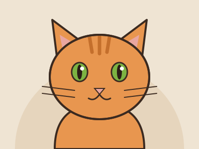

Как всё началось
«Мурлатте» начиналось как мини-мечта: уютное место, где пахнет свежим кофе, по диванам гуляют котики, а на пене в каждой чашке улыбается маленький зверёк.
- Идея. Чашка капучино, кот на коленях и мысль: «А если совместить?»
- Лазер. Поиски гравёра для пены и сотни пробных котиков на тестовых чашках.
- Котики. Знакомство с приютом и первые пушистые жители кафе.
- Открытие. Десять столиков, один лазер и четыре мурчащих администратора.
